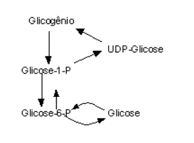

13 Metabolismo do Glicogênio
13.1 Introdução
O glicogênio é a forma animal de armazenamento da glicose. Assim como o amido, é composto exclusivamente de um grande número de glicoses interligadas. Diferentemente daquele, porém, possui muitas ramificações, o que permite armazenar várias glicoses em forma de polissacarídio num espaço bem pequeno. A ramificação do glicogênio se assemelha aos ramos e galhos que saem de um tronco de árvore. Como a glicose serve para produzir energia, estoques de glicogênio são verdadeiras reservas de energia. Eles existem principalmente no fígado e nos músculos.
Quando a célula está precisando de bastante energia, como numa corrida de maratona, esse glicogênio é atacado por diversas enzimas para liberar glicose livre para produção de energia através do metabolismo intermediário. Contrariamente, quando a célula não precisa de grandes quantidades de energia, o que ocorre quando há muitas moléculas de glicose livre no sangue após as refeições, um outro conjunto de enzimas age ligando as moléculas de glicose para estocá-as na forma de glicogênio. O primeiro processo chama-se glicogenólise, ou lise do glicogênio, e o segundo processo, glicogênese, ou síntese de glicogênio. Ambos os processos são estritamente controlados pela célula através de sua disponibilidade de ATP, ou por controle de hormônios, tais como a insulina.
Cuidado para não confundir glicogênese, a produção de glicogênio, com gliconeogênese, a produção de nova glicose a partir de outros compostos. A síntese e degradação de glicogênio envolve reações opostas de enzimas. Na síntese há a formação de uma âncora na qual passa a se encaixar várias moléculas de glicose ligadas entre si, alongando a estrutura, seguida pelas ramificaçãoes. Na degradação, ocorre a quebra dessas ramificações, juntamente com o encurtamento da molécula de glicogênio. No final das contas, pra montar e quebrar o glicogênio, participam umas 6 enzimas diferentes.

13.2 Detalhes
O glicogênio é a forma de armazenamento da glicose. Este armazenamento se faz necessário pois se a glicose existisse livre na célula, o aumento da osmolaridade intracelular seria incompatível com a vida. Não obstante, a mobilização de glicogênio é uma forma rápida de prover glicose ao organismo, diferentemente da gliconeogênese. Estruturalmente, é formado por uma ramificação de moléculas de glicose interligadas, resultando numa polissacarídio de peso molecular aproximado de 105 kD (equivalente a mais de 15 mil moléculas de insulina).
Dependendo das necessidades do organismo, a glicose pode ser então armazenada (síntese de glicogênio, pela glicogênio sintase) ou liberada para oxidação (degradação de glicogênio, pela glicogênio fosforilase). O metabolismo do glicogênio ocorre no citosol hepático (8% do peso do fígado) e muscular (2% do peso do músculo), principalmente. A lógica da via de síntese envolve a produção de um precursor (UDP-glicose), alongamento da cadeia (-Glc-Glc-Glc-), e ramificação. A lógica da via de degradação envolve um encurtamento da cadeia simultâneo à desramificação, e conversão à glicose-6-P. A mobilização do glicogênio muscular é pouco afetada no jejum, a não ser em casos extremos. Entretanto, é a principal fonte de energia do músculo em repouso quando este inicia uma atividade, exaurindo seus estoques em 8 a 12 min.
No metabolismo de síntese e degradação do glicogênio estão envolvidas uma dúzia de enzimas. A síntese se inicia por uma glicomutase (Glc-6-P -> Glc-1-P) que prepara a glicose para sua ativação ao UDP, ação efetivada pela UDP-Glc-pirofosforilase, e resultando em UDP-Glc. A partir desta, ligações \(\alpha\)-1,4 são realizadas entre resíduos de glicose pela glicogênio sintase, mediante o auxílio de um primer de oligossacarídio pré-existente, ou do ancoramento a glicogenina (propiciado pela sintase iniciadora do glicogênio), proteína que também pode iniciar a polimerização do glicogênio por fosforilação de resíduos de Tyr. Realizada a síntese do oligossacarídio inicial, sucede-se o seu alongamento e ramificação, tarefa última concluída pela glicosil 4:6 transferase (transglicosidase), nas ligações \(\alpha\)-1,6 de cada 5 ou 8 resíduos de glicose. As extremidades resultantes podem ser agora alongadas pela glicogênio sintase.
A degradação do glicogênio inicia-se simultaneamente através de sua desramificação e encurtamento pela glicogênio fosforilase, que remove resíduos de glicose nas ligações \(\alpha\)-1,4, até um ponto limite, a 4 resíduos de glicose do esqueleto principal. Daí em diante, surge a enzima desramificadora, com dois domínios principais. O primeiro, da glicosil 4:4 transferase (oligoglicotransferase), realiza a remoção dos ramos nas ligações \(\alpha\)-1,4 a 3 resíduos de glicose do esqueleto principal do polímero, seguida da tranferência e re-ligação destes na extremidade não redutora e não ramificada do polímero, aumentando o seu comprimento. A seguir, o resíduo isolado de glicose restante unido por ligação \(\alpha\)-1,6 ao esqueleto principal, é removido pela amilo \(\alpha\)-1,6-glicosidase, produzindo glicose livre.
A ação da glicogênio fosforilase ocorre até o ponto limite de 4 resíduos de glicose, quer nos ramos (dextrina limite) ou no esqueleto principal do glicogênio. A regulação de síntese e degradação de glicogênio ocorre principalmente por modulação das atividades da glicogênio sintase (ativada por glicose-6-P da dieta, e por ATP; inibida por c-AMP e glicagon) e da glicogênio fosforilase (ativada por c-AMP, Ca2+; inibida por insulina).

13.3 Aplicação
O glicogênio representa de 2 a 8% do peso úmido do fígado, e até 1% do tecido muscular. Normalmente é determinado na bromatologia de carcaças, à excessão da de peixes, onde exerce uma contribuição inferior a 1 %. Porém, em moluscos (ostra, mexilhão), o glicogênio pode atingir até 10 % da matéria seca do pescado. Assim, para a diferenciação de espécies de peixes em geral, são empregados métodos de determinação de lipídios.
Na produtividade animal, 70-90% da glicose mobilizada pelo glicogênio e pela gliconeogênese é utilizada na elaboração do leite, cujo açúcar principal, a lactose, é formada por ligação de galactose com glicose. Dessa forma, contém o leite até 90 vezes mais açúcar que o sangue. A necessidade de glicose em ruminantes oscila entre 30 a 60 mg/dL de sangue (metade da de humanos e monogástricos), com o sistema nervoso fazendo uso de 15% desta.

A maior demanda da glicose ocorre no final da prenhez e lactação animal. As fontes de glicose em monogástricos inclui o amido e a sacarose; em poligástricos, soma-se a estas a celulose, a qual é levemente convertida pela fermentação ruminal.
13.3.1 Doenças
As doenças do metabolismo do glicogênio são severas, já que lidam com estocagem e fonte de energia organismal. Assim, a doença de Von Gierke, que afeta o fígado, rins e intestino, e é ocasionada por deficiência da glicose-6-fosfatase, leva a uma esteatose, hiperacidemia lática, hepatomegalia e hipoglicemia severas.
A doença de Pompe, por sua vez, age contrariamente, no acúmulo lisossômico de glicogênio produzido por deficiência da \(\alpha\)-1,4-glicosidase. Resulta em concentrações excessivas de glicogênio em vacúolos anormais e citosol, cardiomegalia severa e óbito precoce. A doença de Andersen, causada por deficiência da enzima desramificadora amilo-\(\alpha\)-1,6-glicosidase, ocasiona cirrose hepática infantil progressiva e morte.